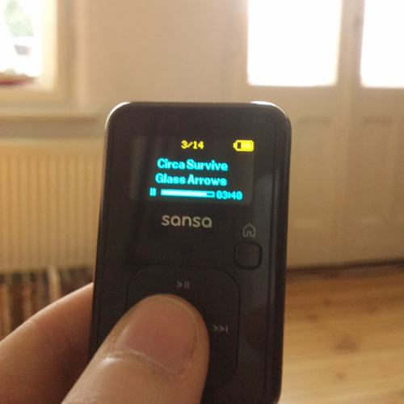

Sandisk MP3-Player "Sansa Clip+" 8GB

Für einen Geek wie mich, der ohnehin nie ein Auto hatte, keines hat und so
schnell wohl auch keines haben wird, ist die Anschaffung eines neuen MP3-Players
die Erfahrung, die einem Autokauf am nächsten kommt, zumindest in meiner Vorstellung.
Es gilt soviel zu bedenken: Marke, HDD oder Flashspeicher, Batterie oder Akku,
Lautstärke (burn, EU-Richtlinien, burn!), Bedienbarkeit, Mac-Kompatibilität,
Datentransfer, Display, Größe und Gewicht, Benutzerrezensionen bei
Amazon und last but not least: Ästhetik. Jetzt wo ich das alles so aufschreibe,
finde ich es höchst erstaunlich, dass ich mich überhaupt für ein Model entschieden
habe.
Schlußendlich hat sich die Academy für den Sansa Clip
aus dem Hause Sandisk entschieden. Das gute Stück ist seit gut einer Woche im
Einsatz und hat sich seither als solides Arbeitspferd erwiesen. Folgende
Punkt seien hervorgehoben.
- 8GB Flashspeicher reichen für das Nötigste.
- Ein MicroSD- und MicroSDHC-Kartenslot erlaubt nochmal bis zu 32 GB zusätzlich reinzustecken.
16GB-Karten kosten derzeit um die 20 Euro, 32GB-Karten 70. Die 40GB in Summe würden meine gesamte
MP3-Sammlung einschl. der Unmengen an Hörbüchern aufnehmen, und wenn man sich über eines sicher
sein kann, dann dass diese Speicherkarten immer größer und immer billiger werden.
- Das kleine Display erlaubt es auch größere Mengen MP3s ordentlich zu durchsurfen.
- Das Streichholzschachtelformat ist ideal für den täglichen Gebrauch in
- Datentransfer funktioniert unter Mac indem der Sans per MiniUSB als Laufwerk gemountet wird
und die gewünschte Ordner und Dateien einfach rüberkopiert werden. Vorteil: Auf anderen Rechnern kann man
auch problemlos runterziehen, was auf dem Zwerg drauf ist.
- Eine Software zur Synchronisierung, die wie bei Apple zwingend installiert werden muss,
entfällt also, was für mich eine der allerwichtigsten Anforderungen war.
- Klangmäßig bin ich ja seit jeher und immer noch totaler Dilletant, freue mich
aber nichtsdestotrotz über den eingebauten Equalizer. Gerade Stromguitarren-und-Schlagzeug-Musik
läßt sich mit der richtigen Einstellung deutlich im Genuß verbessern.
- Die Lautstärke ist immer noch nicht, das was ich mir wünschen würde,
und man muss in den Systemeinstellungen, als "Region" "Rest of the World" auswählen. Allerdings
ist das gut Stück immer noch lauter aus die MP3-Produkte aus dem Hause-Apple und damit schon mal
ein Fortschritt. Ich sollte mir für meine tauben Ohren einfach mal einen
Kopfhörerverstärker zulegen.
- Der Akku läuft angeblich 15 Stunden, was mich aber irgendwie noch nie
so wirklich interssiert hat. Batterien wären mir lieber gewesen, aber man kann ja nicht alles
haben.
- 54 Euronen sind ein ziemlich fairer Preis für den Spaß.
Alles in allem: Schwere Geburt. Glücklicher Besitzer.


Kommentare
von Robert #
Danke!
Ich sehe das ich in etwa gleiche Anforderungen habe, und dein Bericht hilft mir gut weiter.
Vor allem den Vergleich mit dem Autokauf kann ich guuuuuut nachempfinden...
Ist das Gerät den geeignet, beim Sport für musikalische Untermalung zu sorgen? Sprich: kann man es auch blind bedienen?
von ben_ #
Ich mache irgendwie nie Sport mit MP3-Playern. Von daher kann ich das nicht mit Bestimmtheit sagen. Immerhin gibt es einen Doppelknopf für lauter und leiser an der Seite, den ich sehr gut bedienen kann. Play/Pause und nächstes / vorheriges Lied lassen sich ebenfalls meiner Erfahrung nach ganz gut blind bedienen. Mehr muss ich in der U-Bahn meist nicht machen.
Ich bin mir nicht sicher, ob man mit etwas Übung auch durch die Ordner surfen könnte, ohne hinzugucken.
von Robert #
Das mit Lauter/Leiser, Start/Stop und Vor/Zurück ist das wichtigste. Danke für die Einschätzung, das Gerät kommt auf die Liste der Kandidaten!
von neml #
Funktioniert diese blinde Bedienung denn auch, wenn das Gerät im HOLD-Modus ist? Denn sonst besteht doch die Gefahr, dass man durch Reibung im Menü umhernavigiert (und dann sind die Prev.-/Next-Tasten doch bestimmt anders belegt, oder?)
von ben_ #
Ähm. Also einen Hold-Modus gibt es glaube ich nicht. Allerdings glaube ich nicht, dass man ungewollt umhernavigiert. Dafür muss man auf die Tasten doch ganz ordentlich Druck ausüben und da der namensgebende Clip hinten ist, sollte das in der Regel nicht ungewollt passieren.
von n¦tropie #
Für einen Geek wie dich ist dann auch noch das Betriebssystem Rockbox obligatorisch, ne.
von Paul #
Betriebssysteme für MP3-Player? Danke für den Link!
von Konstantin #
Hab damals für meine Mutter einen gesucht und bin bei kleinen Philips GoGears hängengeblieben. Mutters Freude war allerdings kurz.
von Onkel Fester #
Funktioniert das Beladen auch ohne den Windows Media Player? Habe vor 'nen MP3-Player zu Weihnachten zu verschenken und in der vorsorglich heruntergeladenen Bedienungsanleitung des Sansa Clip steht viel zu viel Media Player-Gemurkse. :/
von ben_ #
@Onkel Fester: Jan und nein. Ja. Auf dem Mac kann man das Ding einfach als externe Festplatte laden und die Daten in den Ordner "Music" schieben und los geht's. Laut Anleitung soll das auch unter Windows so gehen, hab ich aber aus Ermangelung eines Windowsrechners noch nicht ausprobiert. Die "Synchronisierung" muss man so aber auch von Hand machen. Also Ordner kopieren oder löschen. Aber damit hab ich irgendwie nie Probleme gehabt. Im Gegenteil. Das finde ich am geilste, dass ich den einfach per Finder (Unter Windows dann halt Explorer) bestücken kann.
Und Nein. Für richtige Synchronisierung und für Playlisten braucht man allerdings den Windows-Media-Player 10. Steht auf der Packung.
von Onkel Fester #
Synchronisierung "per Hand" indem man einfach Ordner draufkopiert oder löscht ist ja das was ich gerne machen möchte. Von daher ist dann ja alles prima. Danke.
von Thomas #
Ich wollte mich gerade wundern warum Du Creative nicht in Betracht gezogen hast, da ich den wunderbaren Zen Stone Plus besitze aber scheinbar haben die Produktdesigner von Microsoft abgeworben.